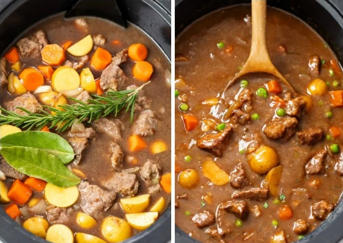
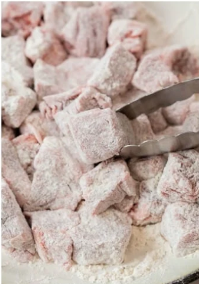
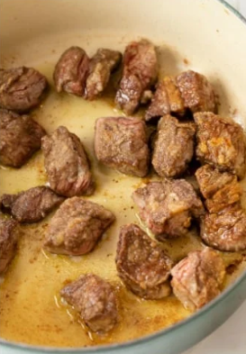
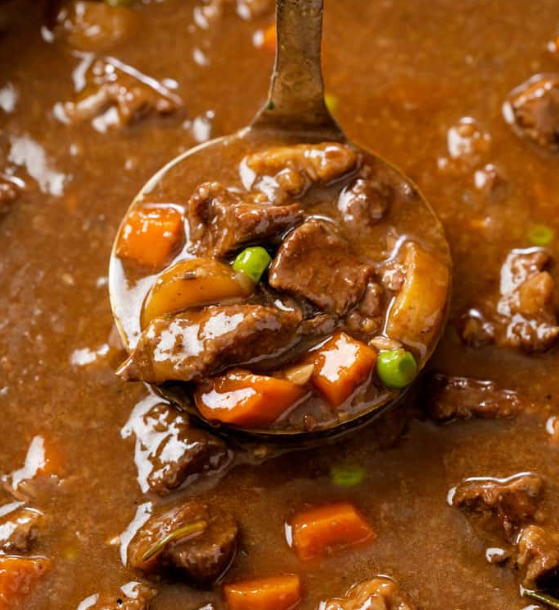

Ingredients
- 2 lbs beef stew meat, cut into 1" cubes
- ¼ cup all-purpose flour
- ½ tsp salt
- ½ tsp ground black pepper
- 1 clove garlic, minced
- 1 bay leaf
- 1 tsp paprika
- 1 tsp Worcestershire sauce
- 1 onion, chopped
- 1½ cups beef broth
- 3 potatoes, diced
- 4 carrots, sliced
- 1 stalk celery, chopped

Directions
- Place meat in slow cooker; add garlic, bay leaf, paprika, Worcestershire sauce, onion, broth, potatoes, carrots, and celery.
- 2. In a small bowl, mix flour, salt, and pepper; sprinkle over meat and stir to coat.
- Cover and cook on Low for 10–12 hours or on High for 4–6 hours.
- Remove bay leaf, stir gently, and serve hot
Ingredients Terms
- Beef Stew Meat
- Well-marbled beef trimmed and cut into 1-inch cubes for even cooking.
- Worcestershire Sauce
- A fermented liquid condiment that adds umami and depth of flavor.
- Bay Leaf
- Leaf of the bay laurel tree; infuses a subtle herbal aroma.
Notes
Easy Cleanup: Use a slow cooker liner for fuss-free cleanup.